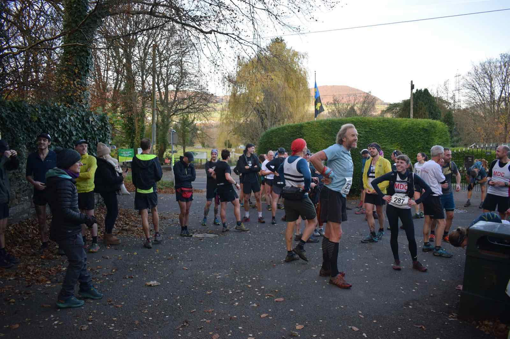
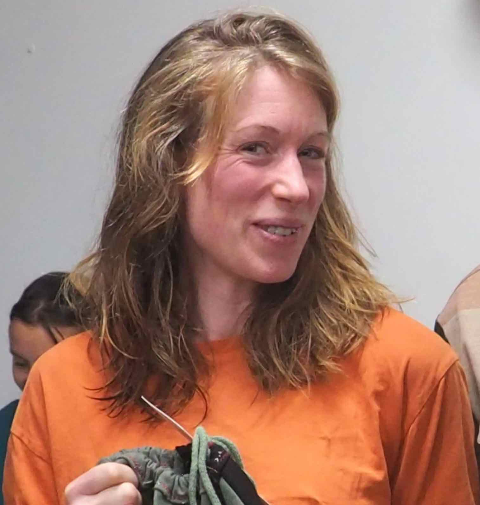

Travel for 2026
Race HQ is at Llanfoist Community Hall. The race itself starts at the bottom of Church Lane, Llanfoist.
Rail and bus
Abergavenny is the nearest railway station. Check current onward bus and local travel options with Traveline Cymru before setting out; timetables can change.
Walking and cycling
Walking from Abergavenny or Llanfoist may be practical for some participants. Cycle parking is available at Llanfoist Community Hall. Plan for winter weather, visibility and the return journey.
Driving
Parking is available but limited. Please lift-share where possible, park considerately and follow any race-day directions from marshals.
Choose the safest practical option for your circumstances. Check live public-transport information and weather before travelling.

2026 kit requirements
Bring every item on the full kit list to the event, even if the weather looks settled. The Race Organiser will decide on the day what competitors must carry.
- Waterproof/windproof top
- Waterproof/windproof legs
- Hat
- Gloves
- Compass
- Whistle
- Food and drink as needed for the conditions
- A waterproofed map of the race route
- Something to carry the kit in, such as a bumbag or rucksack
Practical guidance
Wear fell-running shoes with effective grip and arrive prepared for exposed, wet and cold winter conditions. Competitors are responsible for their own safety and must follow the Race Organiser’s instructions.
Navigation must not rely solely on a phone, watch or other electronic device. Bring the map and compass, know how to use them and read the Welsh Fell Runners Association guidance for runners before race day.
Do not leave kit at home. The on-the-day decision is about what you must carry during the race, not what you need to bring to registration.
Confirmed 2025 results
2025 Race Report
A total of 102 runners completed the 2025 Blorenge Fell Race.
Overall podium
- Tom SpearmanOUSC · 33:25
- Rhys GoodrickVegan Runners UK · 34:34
- Jonathan FordMynydd Du · 35:54
Women’s podium
- Bethan LoganMynydd Du · 40:21
- Ceri MerwoodCDF Runners · 42:39
- Rhian ProbertMynydd Du · 43:31
Runners represented a wide range of clubs, with strong local participation led by Mynydd Du. Its 26 finishers were the largest club representation.

Confirmed finishers
2025 race statistics
These figures describe the 102 finishers in the published result data, not registrations.
- Finishers
- 102
- Male finishers
- 76
- Female finishers
- 26
- Largest represented club
- Mynydd Du 26 finishers
- Overall winning time
- 33:25
- Women’s winning time
- 40:21
Participation by recorded result category
25.5% female and 74.5% male, based on the gender categories recorded in the published result data.